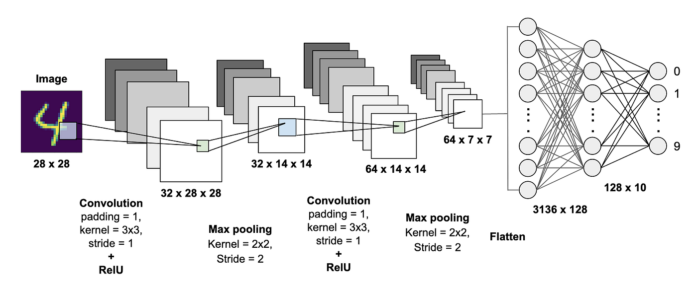
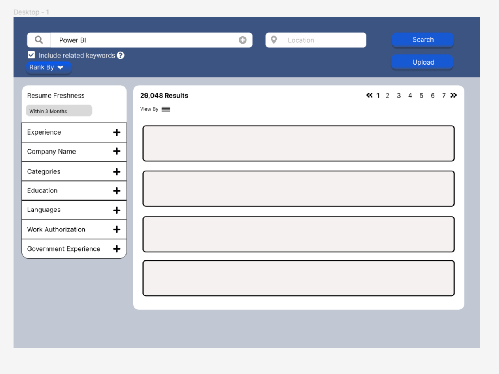
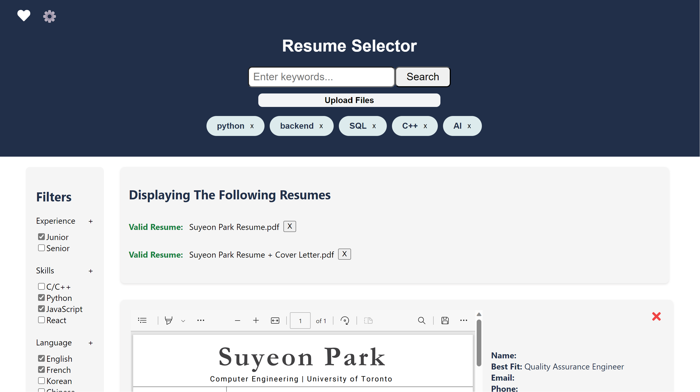
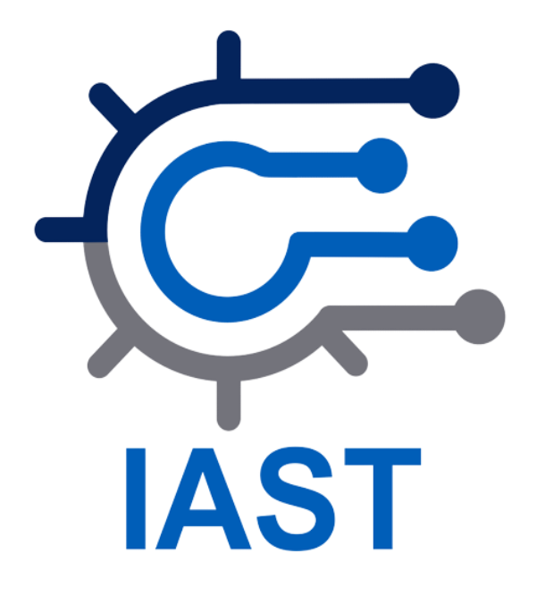

Ontario Ministry of Transportation
IT Project Assistant
1. MyEOIS Website Enhancement
During my summer internship as an IT Project Assistant, I played a role in managing and enhancing the The Employment Ontario Information System (MyEOIS) government website, which is responsible for supporting the administration of Employment Ontario programs and services.
I actively engaged with the existing codebase, closely observing and analyzing the PHP and JavaScript code. This not only expanded my technical knowledge but also provided me with fresh perspectives on efficient coding practices.


One of my key responsibilities was to identify and resolve errors or bugs within the website. Additionally, I undertook the task of developing new functionalities, such as the "Add more files" and "Select Agents" features, integrating them into the existing codebase. This hands-on experience enabled me to fine-tune my coding skills while contributing to the site's overall usability.
One of the distinctive aspects of my role was my involvement in meetings, where I reported on the issues I had resolved. These meetings occurred twice a week, providing an opportunity for me to communicate my progress to the team effectively and ensure transparency in the development process. This reporting process taught me a sense of teamwork and effective communication skills in workplace.
After reviewing, I transferred support tickets to other agents for review, ensuring that each issue was thoroughly examined and fully resolved. This collaborative approach to ticket management allowed for an efficient resolution process. Initially, I perceived this method as being less efficient and rather slow. however, I subsequently came to realize that precision holds greater significance than speed within governmental contexts.

One notable challenge I encountered during this process was the initial difficulty in understanding the overall workflow, such as working within a local environment and pushing changes to the staging environment. Moreover, I encountered numerous new terminologies in the workspace that I had not encountered in my educational background.
To overcome this challenge, I proactively sought assistance from my senior colleagues and peers. I was not afraid to ask for help and actively engaged in researching and learning the intricacies of programming within the workplace. This commitment allowed me to further develop my communication and technical skills, ultimately contributing to the success of the MyEOIS website project.
2. AI-Based Resume Sorting System
Within a team of summer interns, I contributed to the development of an AI-driven resume sorting system, aimed at enhancing the recruitment process at the Ontario Ministry of Transportation (MTO).
The project followed a structured workflow with the following stages:
1. Ideation and Planning: We initiated the project by brainstorming its objectives and potential strategies. This phase included a comprehensive exploration of AI models, services, and platforms suitable for achieving our goals. Notably, we chose to employ a Convolutional Neural Network (CNN) model for training, considering its strength in text and document processing. Reflecting on the project, I now believe that Transformer-based models such as BERT or GPT would be more suitable for matching textual data in NLP tasks (ATTENION IS ALL YOU NEED!!!).
2. Presentation to Stakeholders: We presented our project proposal, outlining the objectives, strategies, and technological choices to our supervisors. This presentation served as a critical step in understanding the needs of the recruitment managers.
3. Prototyping: Our team embarked on the development of both the frontend and backend of the project. The backend team crafted a prototype of the ML model using Python and TensorFlow. However, the accuracy of the model was initially quite low due to the limited amount of resume datasets available. The image below is a screenshot of the Figma prototype of the frontend.
4. Development: The development phase encompassed the detailed implementation of both frontend and backend components. Key to our project's success was the creation of an user-friendly interface, which integrated the AI-driven sorting system, a search engine, and database functionalities. I utilized a combination of React + Vite in my local environment to run a faster development server.
During development, one of our primary challenges was selecting the most appropriate technologies and services for deploying the website. As we initially focused on local development, deployment considerations had not been thoroughly explored. We evaluated multiple options, including Google Firebase, GitHub, SQL, SQLite, MongoDB, and more. Each offered distinct advantages and limitations. It was imperative to ensure that the chosen platform aligned with our project's budget and supported the necessary dependencies or APIs.
Addressing this challenge demanded a blend of technical expertise and effective team communication. After discussion and research, we selected Netlify as the most suitable platform for website deployment.
To access the website, please click here.
To access the GitHub repository for this project, please click here.
5. Showcasing and Validation: After completing the development phase, we presented the final product to our supervisors for validation and feedback.
6. Documentation: As a concluding step, our team documented our project's purpose, methodology, and technical details. This documentation included insights for future interns to build upon our work and suggestions for further development.
This project offered a unique opportunity to develop both frontend and backend components, providing me with a comprehensive understanding of project management from a technical perspective. I learned the importance of communication and teamwork when it comes to the success of the project.
3. IAST Logo Design Contest
I participated the IAST (Integrated Application Support Team) Logo Design Contest. My goal was to create a logo that reflected the essence of IAST team. I designed the logo in Photoshop and created an introductory video, aiming for a clean and impactful visual representation. As a result of my efforts, my design won the contest.
To watch the introductory video, please click here.
